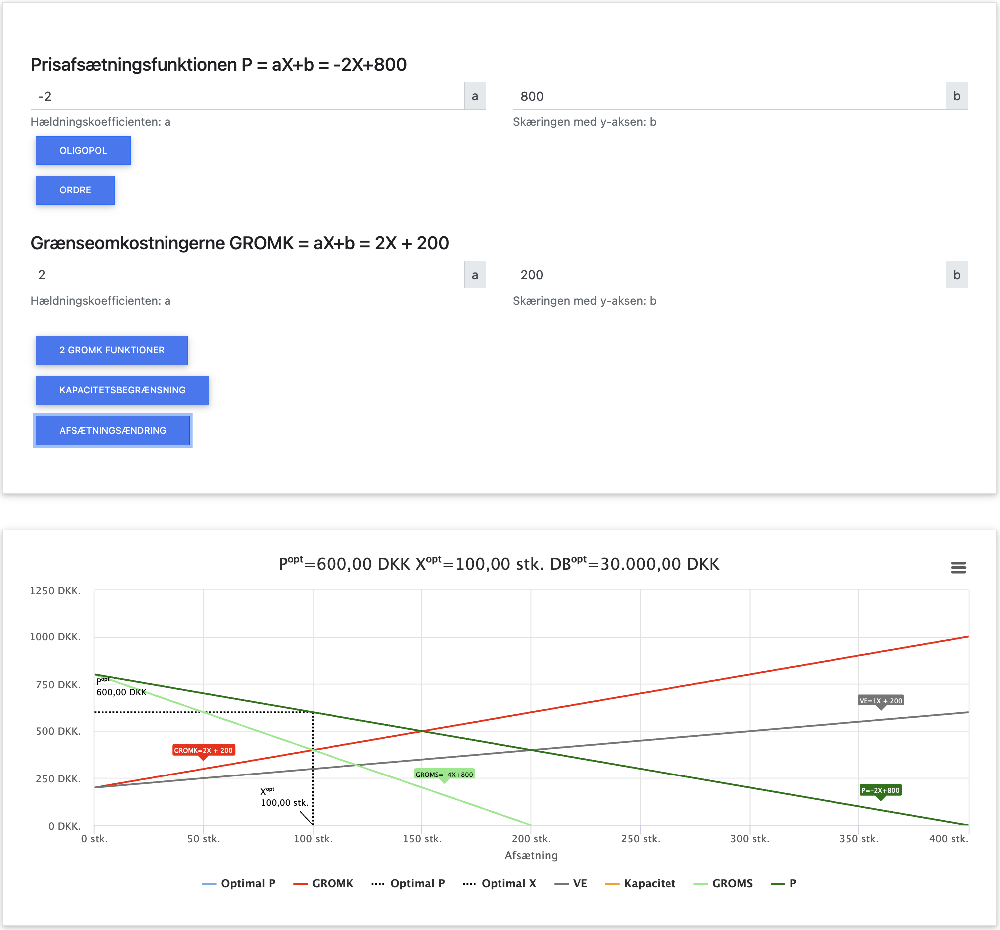
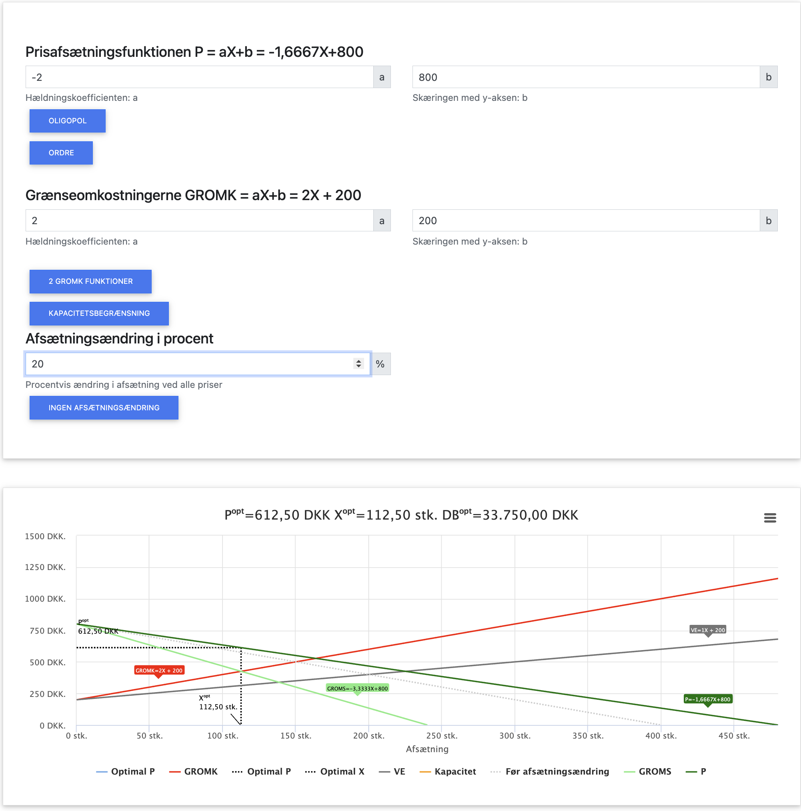

Markedsføring og Dækningsbidrag
Markedsføring er en afgørende faktor, der kan påvirke virksomhedens afsætning og dermed også dens dækningsbidrag. Når vi medregner markedsføringsomkostninger, taler vi om markedsføringsbidraget (MFB), som er dækningsbidraget (DB) fratrukket markedsføringsomkostningerne.
Hovedpunkter i dette kapitel:
- Hvordan markedsføring påvirker efterspørgselskurven
- Beregning af markedsføringsbidrag (MFB)
- Optimering af markedsføringsbudget
- Økonomisk vurdering af markedsføringstiltag
- Andre faktorer der kan begrunde markedsføringstiltag
I dette kapitel benytter vi følgende forkortelser:
- P = Pris
- X = Mængde
- OMS = Omsætning (P × X)
- VO = Variable omkostninger (VE × X)
- FO = Faste omkostninger
- VE = Variable enhedsomkostninger (VO / X)
- GROMS = Grænseomsætning (OMS' = ændring i omsætning ved ændring i afsat mængde X)
- GROMK = Grænseomkostninger (TO' = ændring i totale omkostninger ved ændring i afsat mængde X)
- DB = Dækningsbidrag (OMS - VO)
- MFB = Markedsføringsbidrag (DB - Markedsføringsomkostninger)
- TO = Totale omkostninger (FO + VO)
- TE = Totale enhedsomkostninger (TO / X)
Markedsføringens effekt på efterspørgslen
Markedsføring kan påvirke virksomhedens efterspørgselskurve på flere måder:
- Øge efterspørgslen ved alle prisniveauer (parallelforskydning af kurven)
- Gøre efterspørgslen mindre prisfølsom (fladere efterspørgselskurve)
- Øge maksimalprisen forbrugerne er villige til at betale
- Skabe produktdifferentiering, som kan give virksomheden mere markedsmagt
Typer af markedsføringseffekter
Markedsføring kan have forskellige effekter, som varierer i styrke og varighed:
- Kortsigtede effekter: Umiddelbar salgseffekt, ofte i form af kampagner og tilbud
- Langsigtede effekter: Opbygning af brand og kendskabsgrad
- Direkte effekter: Målbar påvirkning af salget
- Indirekte effekter: Påvirkning af brand-image og konkurrenceposition
Effektiv markedsføring kombinerer ofte disse effekter for at maksimere afkastet.
Real-world eksempler på markedsføringens effekt
| Virksomhed | Markedsføringstiltag | Effekt på efterspørgsel | Effekt på dækningsbidrag |
|---|---|---|---|
| Coca-Cola | Navne på flaskerne ("Share a Coke"-kampagnen) | Øgede salget med 2,5% i USA og 7% i Australien | Øget dækningsbidrag der langt oversteg markedsføringsomkostningerne |
| Carlsberg | "Probably the best beer in the world"-kampagnen | Langvarig brandeffekt der reducerede prisfølsomheden | Mulighed for at tage højere priser pga. stærkere brand-værdi |
| Apple | Lancering af nye iPhones med omfattende PR og events | Skaber høj efterspørgsel ved produktlanceringer | Mulighed for at fastholde høje priser trods konkurrence |
| Matas | Club Matas loyalitetsprogram | Øget kundeloyalitet og højere gennemsnitskøb | Højere dækningsbidrag per kunde over tid |
| Nemlig.com | Google Ads og retargeting-reklamer | Højere konverteringsrate af besøgende til købende kunder | Øget antal ordrer kompenserer for marketinginvestering |
| Bestseller (Only, Vero Moda) | Influencer-marketing på sociale medier | Øget trafik til webshop og fysiske butikker | Bedre salg af højmarginprodukter gennem målrettet markedsføring |
Gennemgående beregningseksempel
Lad os arbejde med et konkret eksempel på, hvordan markedsføring kan påvirke dækningsbidraget:
Forudsætninger før markedsføring:
- Efterspørgselsfunktion: P = -2X + 800
- Grænseomkostninger: GROMK = 2X + 200
Trin 1: Beregning af optimal produktion før markedsføring
Først finder vi omsætningsfunktionen:
OMS = P × X = (-2X + 800) × X = -2X² + 800X
Grænseomsætning: GROMS = -4X + 800
Optimal produktion opnås hvor GROMS = GROMK:
-4X + 800 = 2X + 200
-4X - 2X = 200 - 800
-6X = -600
X = 100 enheder
Trin 2: Beregning af optimal pris før markedsføring
P = -2X + 800 = -2 × 100 + 800 = -200 + 800 = 600 kr.
Trin 3: Beregning af dækningsbidrag før markedsføring
For at beregne dækningsbidraget skal vi først finde de variable omkostninger. Vi kan integrere GROMK-funktionen for at finde VO-funktionen:
GROMK = 2X + 200
VO = ∫(2X + 200) dX = X² + 200X + C
Hvor C er en konstant. Da VO = 0 når X = 0, er C = 0.
VO = X² + 200X
Ved X = 100:
VO = 100² + 200 × 100 = 10.000 + 20.000 = 30.000 kr.
OMS = P × X = 600 × 100 = 60.000 kr.
DB = OMS - VO = 60.000 - 30.000 = 30.000 kr.
Trin 4: Vurdering af markedsføringstiltag
Virksomheden overvejer at bruge 4.000 kr. på markedsføring, som forventes at øge afsætningen med 20% ved alle prisniveauer. Dette svarer til at mængden X øges med 20% for hver pris P, eller alternativt at den nye efterspørgselsfunktion bliver:
P = -2/1,2 × X + 800 = -5/3 × X + 800
Trin 5: Beregning af optimal produktion efter markedsføring
Nu finder vi den nye omsætningsfunktion:
OMS = P × X = (-5/3 × X + 800) × X = -5/3 × X² + 800X
Grænseomsætning: GROMS = -10/3 × X + 800
Optimal produktion opnås hvor GROMS = GROMK:
-10/3 × X + 800 = 2X + 200
-10/3 × X - 2X = 200 - 800
-10/3 × X - 6/3 × X = -600
-16/3 × X = -600
X = 112,5 enheder
Trin 6: Beregning af optimal pris efter markedsføring
P = -5/3 × X + 800 = -5/3 × 112,5 + 800 = -187,5 + 800 = 612,5 kr.
Trin 7: Beregning af markedsføringsbidrag (MFB)
Ved X = 112,5:
VO = X² + 200X = 112,5² + 200 × 112,5 = 12.656,25 + 22.500 = 35.156,25 kr.
OMS = P × X = 612,5 × 112,5 = 68.906,25 kr.
DB = OMS - VO = 68.906,25 - 35.156,25 = 33.750 kr.
MFB = DB - Markedsføringsomkostninger = 33.750 - 4.000 = 29.750 kr.
Trin 8: Vurdering af markedsføringens effekt
DB før markedsføring: 30.000 kr.
MFB efter markedsføring: 29.750 kr.
Forskel: -250 kr.
Fortolkning: Set fra et rent økonomisk synspunkt i denne periode er markedsføringen ikke rentabel, da markedsføringsbidraget efter markedsføring (29.750 kr.) er lavere end dækningsbidraget før markedsføring (30.000 kr.).

Figur: Uddregning i app af dækningsbidrag før markedsføring

Figur: Uddregning i app af dækningsbidrag efter markedsføring
Åben app
Opsummering af eksemplet
| Parameter | Før markedsføring | Efter markedsføring |
|---|---|---|
| Efterspørgselsfunktion | P = -2X + 800 | P = -5/3X + 800 |
| Grænseomsætning (GROMS) | -4X + 800 | -10/3X + 800 |
| Grænseomkostninger (GROMK) | 2X + 200 | 2X + 200 |
| Optimal mængde (X) | 100 enheder | 112,5 enheder |
| Optimal pris (P) | 600 kr. | 612,5 kr. |
| Variable omkostninger (VO) | 30.000 kr. | 35.156,25 kr. |
| Omsætning (OMS) | 60.000 kr. | 68.906,25 kr. |
| Dækningsbidrag (DB) | 30.000 kr. | 33.750 kr. |
| Markedsføringsomkostninger | 0 kr. | 4.000 kr. |
| Markedsføringsbidrag (MFB) | 30.000 kr. | 29.750 kr. |
| Difference | - | -250 kr. |
Andre faktorer at overveje ved markedsføringsbeslutninger
Selvom markedsføringen i dette eksempel ikke synes at være økonomisk rentabel på kort sigt, kan der være andre faktorer, der gør markedsføringen fordelagtig:
Langsigtede effekter:
- Øget afsætning i kommende perioder
- Øget markedsandel og svækket konkurrenceposition for rivaler
- Højere kendskabsgrad og brandværdi
- Mulighed for at tage højere priser på længere sigt
- Kundeloyalitet og reduceret prisfølsomhed
- Mulighed for at introducere nye produkter i en etableret kundebase
Strategiske overvejelser:
- Defensive tiltag for at beskytte markedsandel
- First-mover-fordele på nye markeder
- Opbygning af indtrædelsesbarrierer for potentielle konkurrenter
- Synergier med andre produkter i virksomhedens portefølje
Sammenfatning af kapitlet
Når virksomheder vurderer, om de skal investere i markedsføring, bør de:
- Beregne det forventede dækningsbidrag både før og efter markedsføring
- Fratrække markedsføringsomkostningerne for at finde markedsføringsbidraget (MFB)
- Vurdere om MFB > DB (før markedsføring) for at afgøre, om markedsføringen er rentabel på kort sigt
- Overveje langsigtede effekter og strategiske fordele, selv hvis markedsføringen ikke er umiddelbart rentabel
- Teste og måle effekten af markedsføringen for at optimere fremtidige tiltag
Husk at den optimale markedsføringsindsats ikke altid er den, der giver størst umiddelbar salgseffekt, men den der over tid maksimerer virksomhedens samlede værdi.